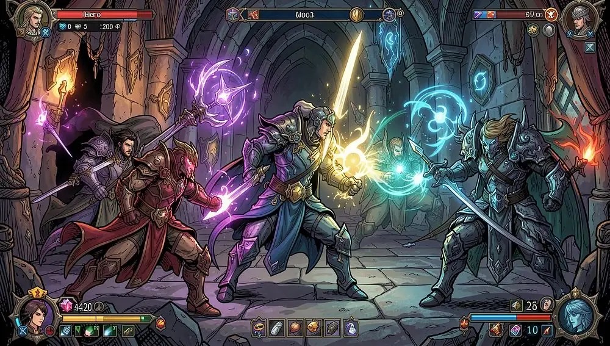
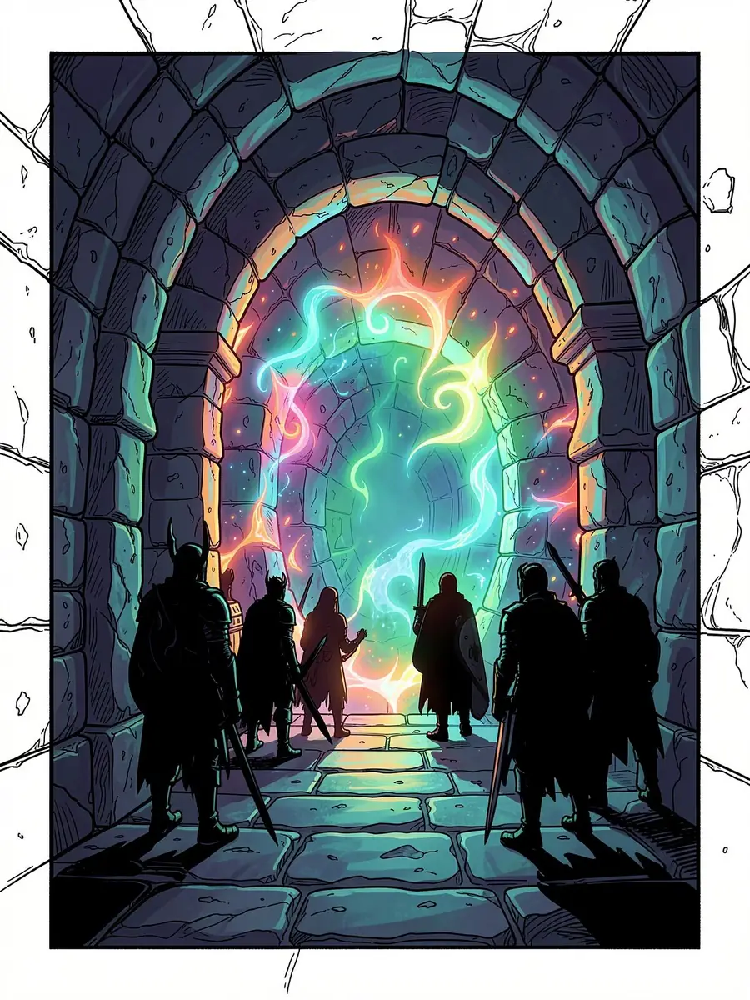
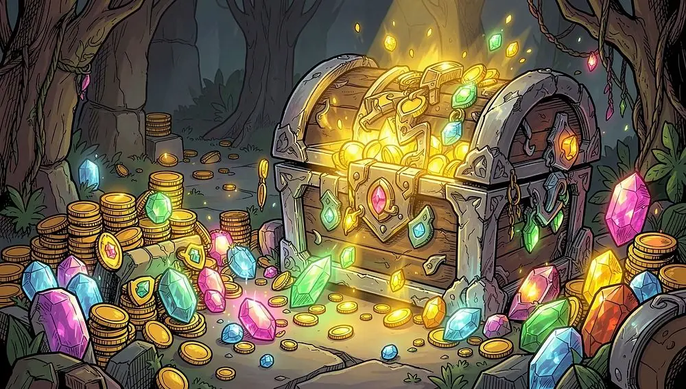
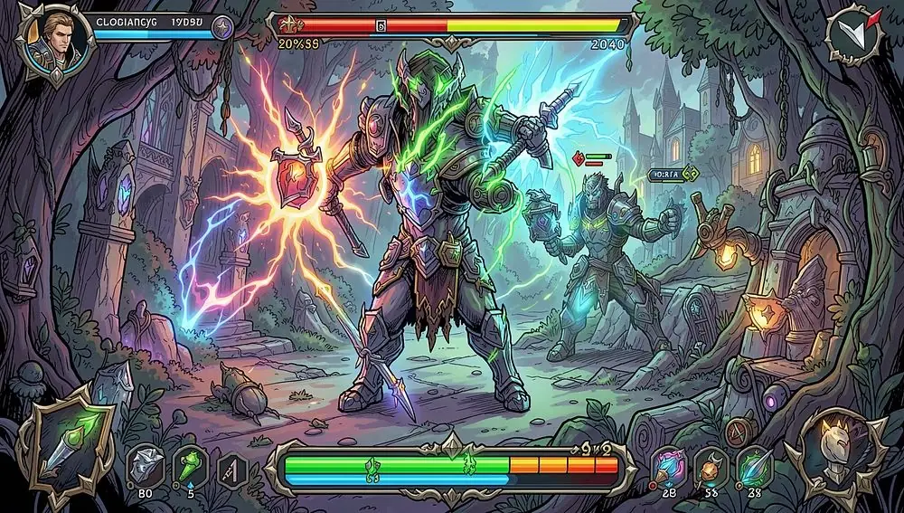
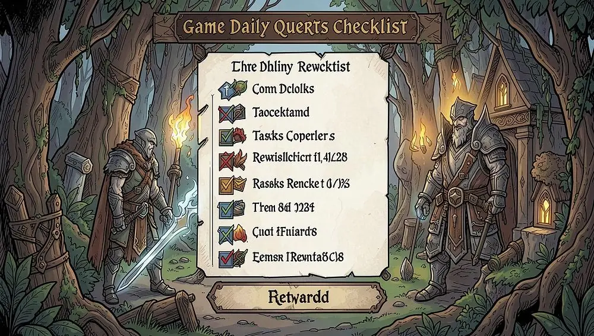

Бот для игры «Крушители Подземелий» (Dungeon Crusher)
Автоматизируйте игровой прогресс в Dungeon Crusher: Soul Hunters — бот ведёт бои, собирает ресурсы и выполняет ежедневные задания, пока вы отдыхаете. Есть программа для ПК и браузерная версия.

Что такое бот для Dungeon Crusher
Бот «Крушители Подземелий» — программа, которая берёт на себя рутинные действия в игре Dungeon Crusher: Soul Hunters. Вместо того чтобы часами кликать, собирать награды и управлять героями вручную, вы запускаете бота — и он работает за вас круглосуточно, без перерывов и усталости.
Бот повторяет действия игрока: кликает по врагам, собирает награды, распределяет энергию, расставляет героев и выполняет ежедневные задания — то же, что вы делали бы вручную.
Есть две версии: клиентская программа для установки на компьютер и браузерная версия, которая запускается прямо в окне браузера без установки. Играйте дома на ПК, на рабочем компьютере или в поездке на ноутбуке — бот всегда под рукой.
Интерфейс понятен и новичку: после авторизации достаточно выбрать режим работы, и автоматизация начнётся сразу. Сложных настроек и технических знаний не нужно.
Работает 24/7
Пока вы спите, работаете или отдыхаете, игровой прогресс не стоит на месте.
Как живой игрок
Повторяет обычные действия игрока — клики, бои, сбор наград.
Просто
Быстрая настройка и запуск за несколько минут, без технических знаний.

Зачем нужен бот в Dungeon Crusher
Dungeon Crusher — игра с глубокой прогрессией: регулярность действий напрямую влияет на силу отряда. Ежедневные награды, накопление ресурсов, своевременное улучшение героев — всё это требует постоянного присутствия в игре.
С ботом вы не привязаны к экрану. Запустите его перед сном — и утром получите собранные ресурсы, пройденные уровни и новые награды. Уйдите на работу — вернитесь к ощутимому прогрессу.
Это не чит и не взлом: бот не создаёт ресурсы «из воздуха» и не меняет игру, а автоматизирует то, что вы делали бы сами, — только без усталости. Вы сосредотачиваетесь на стратегии и удовольствии от игры, а монотонные клики и сбор наград берёт на себя автоматика.
Функции бота
Бот охватывает полный цикл игры — от автоматических боёв и прокачки героев до выполнения ежедневных заданий. Функции можно включать все сразу или только нужные.
Автобой и прокачка
Ведёт бои, подбирает состав героев для уровня подземелья и распределяет опыт. Сам решает, когда использовать ультимативные навыки и когда сменить тактику.
Сбор ресурсов
Собирает золото, самоцветы, свитки и другие ресурсы: пассивный доход, ежедневные бонусы и награды за активность — даже когда вы офлайн.
Ежедневные задания
Отслеживает список квестов, проходит их по очереди и забирает награды, чтобы вы не упустили бонусы.
Управление энергией
Тратит энергию на самые выгодные активности — подземелья, события или накопление для важных улучшений — без бесполезных трат.
Функции работают в связке и складываются в единую систему автоматизации. Гибкая настройка позволяет подстроить бота под ваши цели — быструю прокачку, фарм ресурсов или подготовку к PvP.

Что даёт бот
Экономия времени
Рутинные клики, сбор наград и задания отнимают часы каждый день. Бот берёт их на себя — даже если у вас всего 15–20 минут на игру, они уйдут на стратегию, а не на механические действия.
Прогресс без присутствия
Аккаунт развивается, пока вас нет у экрана, — а скорость развития влияет на позиции в рейтингах, клановых войнах и PvP.
Две версии
Клиентская программа для ПК и браузерная версия — выбирайте удобный формат.
Все платформы игры
Работает с версиями Dungeon Crusher на сайте, в Steam и VK Play.

Запуск бота за 4 шага
От скачивания до первого автоматического боя — около 10–15 минут.
- Выберите версию. Играете на одном компьютере и нужна стабильность — скачайте клиентскую версию. Нужна мобильность — браузерную, она работает без установки.
- Запустите и введите пароль демо-версии 1234.
- Авторизуйтесь через Google — это привязка лицензии и доступ к общению в сообществе. Подключите аккаунт Dungeon Crusher или используйте открытую сессию браузера.
- Выберите режим — полный (все функции) или выборочный — и нажмите «Запустить». Можно наблюдать за ботом или закрыть окно и вернуться к результату.

Скачать бот: клиент или браузерная версия
Обе версии умеют одно и то же и работают с одной лицензией — разница только в способе запуска. Демо-версия бесплатна: попробуйте все функции перед покупкой.
Клиентская версия
Отдельная программа для компьютера: стабильная работа без зависимости от браузера, минимум системных ресурсов, работа в фоне, автоматические обновления.
Браузерная версия
Запускается прямо в браузере (Chrome, Firefox, Edge) — ничего не нужно устанавливать, доступна с любого устройства, старт за пару минут.
Полная лицензия: продление и покупка
Демо-версия даёт полное представление о боте, а для постоянной игры нужна лицензия. После покупки вы получаете ключ активации, который привязывается к учётной записи Google, — доступ не потеряется при смене устройства.
Оплата проходит через Plati.Market — ключ приходит на электронную почту сразу после оплаты. Активация занимает пару минут: откройте бот и введите ключ.
Что входит в лицензию
- Без ограничений по времени сессий и числу запусков
- Все функции: автобой, сбор ресурсов, энергия, ежедневные задания
- Обе версии бота — клиентская и браузерная
- Приоритетная поддержка в группе ВКонтакте
Группа ВКонтакте: помощь и общение
В группе ВКонтакте — ответы на вопросы по установке и настройке, новости об обновлениях бота, советы по стратегиям в Dungeon Crusher и прямая связь с разработчиком.
Техподдержка
Помогут с запуском, установкой и настройкой под вашу версию игры.
Общение
Обсуждайте стратегии прохождения подземелий и делитесь находками.
Новости
Первыми узнавайте о новых функциях и исправлениях.
Dungeon Crusher: Soul Hunters — где играть
Dungeon Crusher: Soul Hunters — RPG с элементами стратегии: вы собираете отряд героев, прокачиваете их способности и ведёте в подземелья навстречу монстрам и боссам. Много героев, разные подземелья, PvP, клановые войны и регулярные события.
Играть можно на официальном сайте в браузере, в Steam и на VK Play.
Частые вопросы
Есть ли бесплатная версия?
Да, демо-версия бесплатна. Пароль при первом запуске — 1234.
Чем клиентская версия отличается от браузерной?
Функции одинаковые и лицензия общая. Клиент — отдельная программа для ПК, стабильнее и работает в фоне; браузерная версия запускается без установки.
С какими версиями игры работает бот?
С Dungeon Crusher: Soul Hunters на официальном сайте, в Steam и VK Play.
Как купить лицензию?
На Plati.Market — ключ приходит на почту сразу после оплаты. Затем продублируйте данные заказа в Telegram или ВКонтакте.